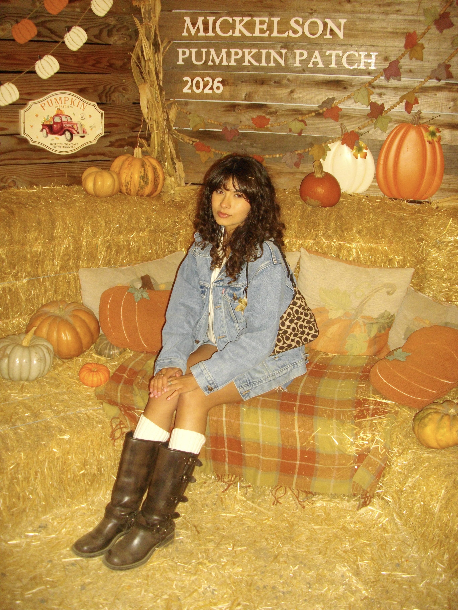

ALEX
FLORES
Hi! I'm Alex Flores, a 19-year-old design maker with a serious love for pasta. While I’m passionate about design, my true obsession is all things pasta, especially spicy vodka rigatoni. If it's on the menu, chances are I'm ordering it! My love for pasta started growing up, constantly begging my dad to make it for me. He's an incredible chef, which definitely set the bar high for every other dish. Now, I'm on a mission to find the best spicy vodka rigatoni, one restaurant at a time!
